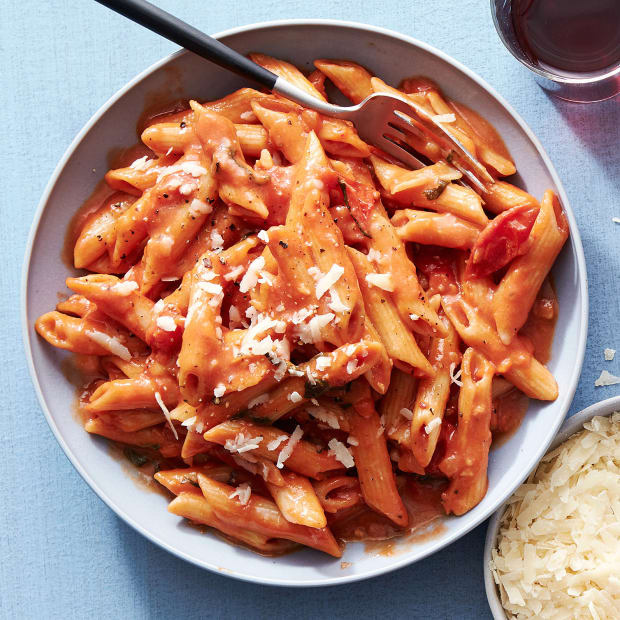

Toasted Penne alla Vodka

Ingredients
- 4 cups....Chicken or Vegetable stock
- 2 tbsp....olive oil
- 2 tbsp....butter
- 1 lbs....penne rigate
- 1 small onion, finely chopped
- 4....garlic cloves, crushed or grated
- ....salt
- 1/2 tsp....crushed red pepper
- 1....fresh bay leaf
- 1 cup....vodka
- 1 pt. (2 cups)....cherry tomatoes,halved
- 2 cups....passata or tomato puree
- 1/3 cup....freshly grated parmigiano-reggiano, plus more for serving
Directions
- In a medium saucepan, bring stock to a boil, then reduce heat to low and keep warm
- In a large, deep skillet, heat the oil over medium high. Add the butter and let it melt into the oil. Add the pasta; cook, stirring often, until golden and fragrant (about 2-4 minutes).
- Add the onion and garlic and cook; stirring often, until softened (about 2-4 minutes).
- Season the pasta with the salt and crushed red pepper, and add the bay leaf. Add the vodka and cook, stirring constantly, until fully absorbed (about 1 minute).
- Add 1 1/2 to 2 cups stock (a few ladlefuls), the cherry tomoatoes, and half the passata; stir until the liquid is greatly reduced, but not dry (about 5-6 minutes). Add the remaining passata and basil.
- cook, stirring often, until the sauce is reduced and the pasta is al dente, adding water by the 1/4 cupful if the sauce is reduced before the pasta is cooked (about 10 minutes more).
- Stir in about 1c cheese, serve pasta in shallow bowls. Pass more cheese at the table for serving.